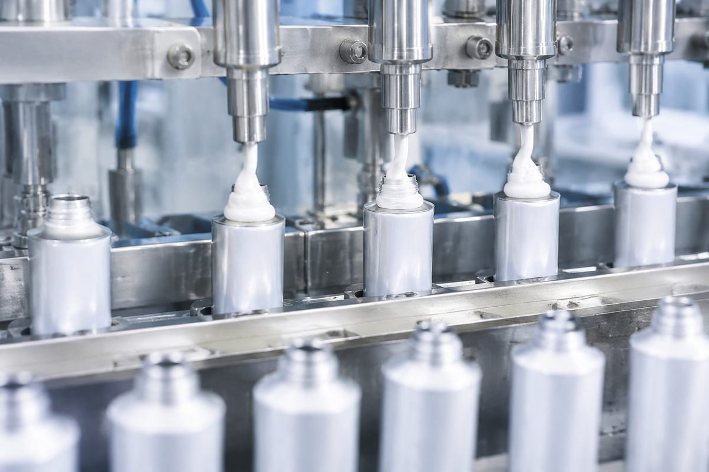

For plants that actually compound and fill their own toothpaste. Instead of quoting one abrasive price, we build a testable screening path across cleaning, structure, appearance and stability using both abrasive and thickener routes.

Two grades cover the two lines: VS-A070 (BET 45–90 m²/g) for controlled-RDA cleaning abrasion, and VS-T400 (BET 350–450 m²/g, oil absorption 260–310 g/100g) for thickening and paste structure.
Typical benchmarks: Evonik ZEODENT® series (e.g. ZEODENT® 113, 165, classic abrasive/thickener dental silica), PQ Corporation dental / toothpaste silica series, Solvay oral-care specialty silica series.
We don't replicate brand premiums. We enter through niche applications, second-source / backup supply and multiple grades, and differentiate with profile screening, problem diagnosis and sample conversion.
Vistasilica VS-series precipitated silica for this track is offered as VS-A070 Abrasive, VS-T400 Thickener. Typical physical properties are shown below with the applicable test method for each parameter.
| Property | Unit | VS-A070 Abrasive | VS-T400 Thickener | Test method |
|---|---|---|---|---|
| BET specific surface area | m²/g | 45 – 90 | 350 – 450 | ISO 9277 / DIN 66131 |
| Oil absorption (DOP) | g/100g | 90 – 140 | 260 – 310 | ISO 4652 / DIN 53617 |
| Particle size D50 | µm | 6 – 12 | 8 – 15 | ISO 13320 (laser diffraction) |
| Sieve residue (45 µm) | % | ≤ 0.05 | ≤ 0.10 | ISO 2591-1 |
| Bulk density (poured) | g/L | 180 – 260 | 70 – 110 | ISO 60 |
| Tapped density | g/L | 280 – 400 | 110 – 170 | ISO 697 |
| pH (5% aq. suspension) | — | 6.5 – 7.5 | 6.5 – 7.5 | ISO 6588 |
| Loss on drying (105 °C, 2 h) | % | 4.0 – 6.0 | 5.0 – 8.0 | ISO 787-2 |
| SiO₂ content (dry basis) | % | ≥ 98.0 | ≥ 97.0 | Gravimetric / XRF |
| Loss on ignition (1000 °C) | % | ≤ 5.0 | ≤ 7.0 | ISO 6798 |
Typical values. Typical values representative of the grade family. Values are for guidance; a grade-specific specification sheet is available on request.
| Test dimension | What to watch | What it tells the customer |
|---|---|---|
| RDA / cleaning | Whether target cleaning performance is met | Judges product positioning |
| Thickening & structure | Whether a stable paste structure forms | Judges filling and storage stability |
| Appearance & feel | Whether it is fine, even and free of grit | Judges consumer experience |
| Centrifuge / storage | Whether syneresis, separation or collapse occur | Judges scale-up risk |